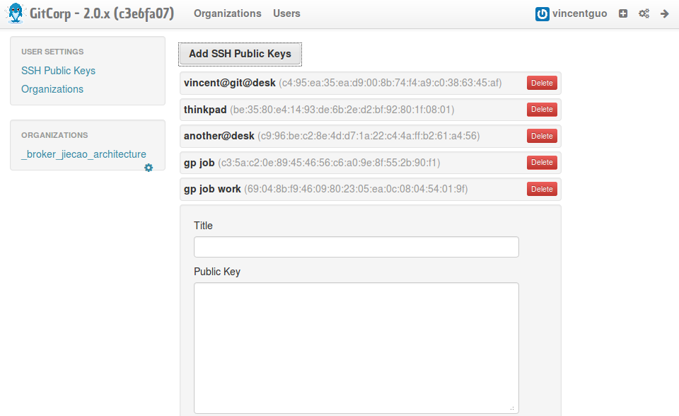
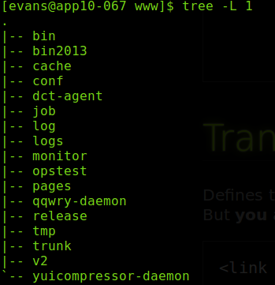
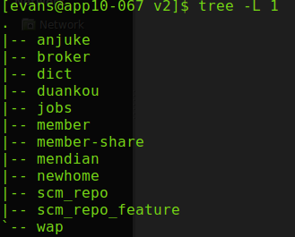

这个是新人基本上都要配置的,将邮件的内容放到wiki去
域帐号登录git.corp.anjuke.com,账户设置->添加公钥(ssh-keygen),然后就可以对我们公司的Git为所欲为了

DBA专门为我们提供了线上的slave,给PD在office查询线上数据、查看线上表 结构及索引、做select语句的性能评估
wiki地址：http://wiki.corp.anjuke.com/index.php?title=All,加入导航之家
请各位在以后成为新同学的Buddy的时候，不要忘记告诉他们
ideliver需要注意神码?
DBRT需要注意神码?
 
掌声响起来!!!
/
#